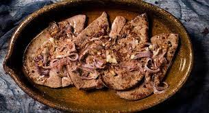

Higado Encebollado

Descripción
El hígado encebollado es una receta muy sencilla, de la abuela, de esas de toda la vida. Con pocos ingredientes y un mínimo esfuerzo, obtendrás un plato delicioso, lleno de vitaminas y donde predomina el hierro.
Ingredientes
- 600 gramos de hígado
- 1 unidad de cebolla cabezona/li>
- 2 dientes de ajo
- 2 cucharadas de salsa de soya
Pasos
- Dejar el hígado en remojo en leche una noche antes de su preparación. Agregar un poco de sal, tapar y llevar a la nevera.
- Picar la cebolla en tajadas medias; ni tan gruesas ni muy delgadas.
- Pelar y picar dos dientes de ajo.
- Poner a escurrir el hígado antes de cocinar y retirarle la membrana.
- Agregar aceite en una sartén para cocinar el hígado por 10 minutos.
- Una vez el hígado esté listo, retirar y reservar.
- En esa misma sartén freír la cebolla en tajadas con la mayonesa, la sala de soya, sal y pimienta al gusto. Mezclar y saltear por 1 minuto.
- Pasado el tiempo agregar el hígado hasta que se integren todos los ingredientes.